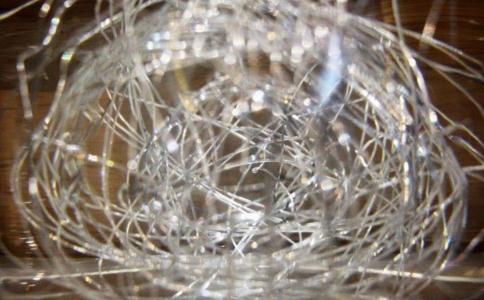

因果关系非常复杂，我们凡夫俗子怎能知道？人事的发生，有的似乎是凶险的，而实在倒是幸福的；有的似乎是可喜可庆的，而实在是可悲可吊的；有的似乎是可悲可吊的，而实在是可喜可庆的。祸福是互相倚伏着的，得失没有一定的啊！
我现在将史册的记载，和耳闻目见的事实，写述几则，来说明祸福休咎的微妙。我们明白了因果以后，自然就能达观了。
遭劫未必是祸
（一）华严五祖纪：唐朝杜顺和尚，有一次到外面去
（二）梁敬叔笔记：姚伯昂先生说：“传说人
（三）梁敬叔先生说：“常州有个甘学究，是以教小学生为
在病中，他狂喊着他父亲的名字。甘学究惊惶失措地答应说：‘我在这里！我在这里！你有什么事吗？’他的儿子说道：‘你前生和我合伙做生意，欠我二百余金。某事除去若干、某事除去若干以后，现在应还我五千三百文。快快还我！还了我，我就去了！’说完了话，就气绝而死了。这真是世俗所谓讨债的了。大凡年幼夭折的儿女，多因讨债而来的；不过像甘学究的儿子般，分明说出来的，十个之中没有一、二个罢了！世间一般做父母的不明因果，反为这种讨债的子女悲伤哭泣，不是很可笑吗？”
（四）纪晓岚笔记：朱元亭有个儿子，生肺病将死的时候，有气无力地自言自语道：“现在还欠我十九金。”这时医生正在开药方，预备给他吃一服
（五）
报恩是：因为父母对于儿子过去世有恩惠，为着报恩，就来做他们的儿子。所以服劳奉养，生事死葬，都称父母的心意。世上的孝子贤孙，都是属于这一类的。
报怨是：因为父母对于儿子过去世有亏负的地方，为着报怨，就来做他们的儿子。所以怨恨小的，就忤逆父母；大的，甚至为非作歹，闯下大祸，害及父母。做父母的，活着的时候，不能得到儿子的奉养；等到死了，还因为儿子的不争气，带着羞耻到九泉去。这是报怨的一种。
还债是：因为儿子在过去世欠父母的资财，为着偿债，就来做他们的儿子。倘若债欠得多的，父母就可以终身由他奉养；若是欠得少的，就不免半路死去。像读书才得了些功名而丧命的，做生意才得了些财利而身死的。
讨债是：因为父母在过去世欠儿子的资财，为着讨债，就来做他们的儿子。小的债，不过损失些学费聘金；等到债还清了，父母虽希望他成事立业，而他忽然夭亡，再也不留片刻。若是大的债，那做父母的损失，可就不止此数，必定要废业荡产、家破人亡才罢！”
这种报恩报怨的因果关系，不独子女是这样，就是
明月笔记：浙江上虞蒲湾地方，有个钟秀峰。当他年纪四十多岁的时候，生个儿子，秀峰很钟爱他。那孩子十岁的时候，生病很危险，秀峰夫妇哭泣着到神祠里去祷告。在夜里梦着一个神对他说道：“你的儿子有许多事情没有了结，那会就死去啊！”醒来之后，他非常庆慰。后来儿子果然病好了。等到这个孩子长成以后，挥霍游荡、忤逆父母，无所不为。钟家便被他破败了，秀峰夫妇终于忧饿而死。这就应验着神梦所说：“有许多事情没有了结”的预示，原来他是来讨债的。
延寿未必可贺觉有情半月刊载：杭州栖霞洞有个智印和尚，能够预先知道未来的事情。有一天，寺里一个短工染疫死了；短工的妻子到山上来，请寺里的长工相帮埋葬。智印和尚知道了，阻止他们不要去埋葬，并且对他们说道：“这个人还有许多苦难没有经过，决不会就这样死了的！”他的妻子回答道：“气早已断了，难道还会活转来吗？”她怀着一肚子的疑团，悻悻然而去了。等到第二天早晨，这个短工果然又活转来了。
得财未必是福 大庄严经论说：有一次，佛和阿难在舍卫国的旷野中行走，看见有一堆金子埋藏着。佛对阿难说：“这是大毒蛇”，阿难对佛说：“这是恶毒蛇”。这时田里有一个农夫在耕种，听见佛和阿难说有毒蛇就去看看。他走到那里一看！原来是一堆黄金；他就拿回家里，从此他就立即变成富翁了。后来被国王知道了，就把他关在监狱里。他从前所得的黄金，到这时已经用完了，但是还不能免去刑罚。他真悔恨极了，不禁叫喊着说：“恶毒蛇阿难！大毒蛇
国王听见了，觉得他说得不伦不类，很是奇怪。于是传讯他：“你怎么说毒蛇？恶毒蛇呢？”这个农夫对国王说道：“我从前在田里耕种，本来很可以安闲度日。有一日，听见佛和阿难说有毒蛇，我去一看！原来是黄金；不禁贪欲心起，拿归家中。今日想来，这黄金原是毒蛇啊！”同时他又唱出一首偈：“诸佛语无二，说为大毒蛇。恶毒蛇势力，我今始证知。于佛世尊所，倍增信敬心；我今临危难，是故称佛语。毒蛇之所螫，止及于一身；财宝毒蛇螫，尽及家眷属！我谓得大利，而反获苦恼！”
这个故事，使我想起一九四三年十一月里，上海报上登的一则新闻：有一个李姓的少妇，有一天得到十余万元，喜出望外，她拿了款子雇汽车回家。在中途被强盗拦劫，把她的所有全数抢去了。这个少妇竟因此死亡。世上的人因着财产遭殃的，耳闻目见，真是很多、很多，说也说不尽的。
家难未必不幸吕碧城女士说：“我家从前住在安徽六安州。当我十三岁的时候，偶然得到一卷观音白衣咒，说持诵百日，能消灾得福；我就每日焚香虔诵。等到刚满百日之期，忽然遭到家难；我家的人都被许多族人禁闭在本宅内，长年不得和外界通消息。后来母亲设法，用密函向外祖母家请求援救；结果得到援助，我们得以到来安县舅父家里寄住。
那时我常常想：为什么持咒百日，求福而反得祸呢？其后有股匪白狼来侵扰安徽，六安被蹂躏得变成废墟。当时我家旧宅里，只有孀嫂和她的女儿翠霞，以及她的女婿汪君居住着。白狼闯到宅中，把汪君杀死了，翠霞也在这时殉难。我的嫂嫂逃到上海，不久也就病死了。现在我才明白：倘若那时我仍旧住在六安，一定同遭到匪难的。我们避居到舅父家里，实在是因祸得福哩！”
谋事得成未必可庆绍兴黄大动君，失业以后，因居在家里的时候，有一次，去求他的先生给他介绍一个职业。他的先生荐他到某军司令部，充任秘书。他到那里去办事，还不到一个月，两军开战了，他所属的军队被打败了。黄君幸而在枪林弹雨中逃出了性命，可是对象尽都损失了。他身无分文，沿途借贷，受尽千辛万苦，总算憔悴而返。他的先生见他这样狼狈回来，对他说道：“这是我害你了！”
谋事不成未必可悲 吴县王玉如君，住在上海的时候，想谋一个轮船司账的职位。因为谋这个位子的人很多，玉如恐怕事情不成，来同我商量；我就劝他念
以上种种的事实，很明显地告诉我们，使我们可以灼然无疑于因果的存在了。